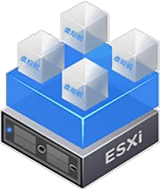
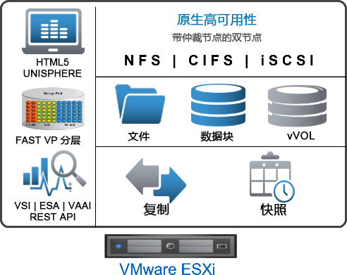

请访问原文链接：Dell UnityVSA 5.5 - 敏捷的软件定义存储 查看最新版。原创作品，转载请保留出处。
作者主页：sysin.org
Dell UnityVSA (Dell EMC Unity Virtual Storage Appliance)
适用于 SAN 和 NAS 的软件定义的敏捷虚拟存储设备

VMware 上 UnityVSA 软件定义的存储
Dell UnityVSA™（虚拟存储设备）让 Dell Unity XT 存储阵列的所有企业级功能都能轻松部署在 VMware ESXi 服务器上，从而使客户能够在本地实施一个经济实惠的高可用、软件定义的存储解决方案 (sysin)。最重要的是，您可以获得一个最多涵盖 4 TB 容量的免费 Community Edition 许可证 — 在测试 / 开发环境中使用。
UnityVSA 软件定义的存储可为您的组织带来诸多好处，包括在考虑硬件整合、多租户存储实例、远程 / 分支机构存储部署时可拥有较低的购置成本，而且更易于构建 / 维护 / 销毁用于备机和测试的环境。
UnityVSA 与物理阵列具有许多相同的全包式软件，使您可以：
- 为您的客户提供高级文件、数据块和 vVOL 数据服务
- 在几分钟内设置一个高可用本地 NAS 或 SAN
- 允许 VMware 管理员使用 VMware vCenter 管理存储
- 使用统一快照在本地保护数据 (sysin)
- 将数据远程复制到其他 UnityVSA 实例或 Unity XT 存储阵列
- 通过全自动存储分层虚拟池 (FAST VP) 实现自动分层，从而提高效率并简化存储管理
- 使用与 Unity XT 存储阵列相同的基于 HTML-5 的 Unisphere 管理虚拟设备。
- 使用我们的免费插件技术，将 UnityVSA 连入现代开发 / 运营、存储和工作流自动化等功能：
- 容器存储接口 (CSI) 插件程序
- VMware vRealize Operations (vRO) 插件程序

理想应用场景
用于测试 / 开发环境的 Community Edition
- 使用相同的 Unity XT 管理 GUI Unisphere
- 轻松迁移到 Professional Edition
适用于生产环境的 Professional Edition
- 中小型企业
- 远程办公室 / 业务机构
- 工作组和部门
- 垂直市场
- 零售
- 教育
- 制造
- 医疗
- 政府
许可
UnityVSA 软件包中包含覆盖 UnityVSA 所有方面的标准集成式管理和监视功能 (sysin)，其中包括操作环境、NAS 和 SAN 协议、Unisphere 管理、FAST VP 自动分层、精简资源调配，以及适用于 NAS 和 SAN 的统一快照 / 复制。另外还包括 Unity XT 64 位文件系统（具备用于空间回收的文件系统缩减功能）、VMDK 克隆、Metrosync Manager 和配额。
Professional Edition — 作为按年订阅许可证提供
- 350 TB：2C vCPU，12 GB 内存，双节点
- 350 TB：12C vCPU，96 GB 内存，双节点
- 50 TB：2C vCPU，12 GB 内存，双节点
- 50 TB：2C vCPU，12 GB 内存，单节点
订阅许可是从低容量点向更高容量点的无缝升级，包括：
- 与软件和系统相关的支持
- 戴尔增强服务
- Dell Secure Remote Support (SRS)
Community Edition — 提供社区支持的免费软件许可证，最高 4 TB，适用于测试 / 开发环境
虚拟机规格
2 核单 SP 部署要求：
- 虚拟内存：12 GB
- 虚拟处理器核心：2 个 (2 GHz+)
- 虚拟网络适配器：6 个（4 个适配器用于 I/O，1 个用于管理，1 个供系统使用）
- Community Edition 和 Professional Edition 许可证
2 核双 SP 部署要求：
- 每个 SP 的虚拟内存：12 GB
- 每个 SP 的虚拟处理器核心：2 个 (2 Ghz+)
- 虚拟网络适配器：9 个（4 个适配器用于 I/O，1 个用于管理，1 个供系统使用，3 个用于内部通信）
- VLAN：3 个（用于心跳信号和内部通信）
- 仅限 Professional Edition 许可证
12 核双 SP 部署要求：
- 每个 SP 的虚拟内存：96 GB
- 每个 SP 的虚拟处理器核心：12 个 (2 Ghz+)
- 虚拟网络适配器：9 个（4 个适配器用于 I/O，1 个用于管理，1 个供系统使用，3 个用于内部通信）
- VLAN：3 个（用于心跳信号和内部通信）
- 仅限 Professional Edition 许可证
VMware 集成支持
支持以下技术：
- 针对虚拟机粒度数据访问和基于存储策略的管理 (SPBM) 的 vVol 支持。
- 针对文件和块数据的 VMware vStorage APIs for Storage Integration (VAAI)，可通过利用更高效的基于阵列的操作而改善性能。
- vStorage APIs for Storage Awareness (VASA) 为 VMware 管理员提供了存储意识。
服务与支持
服务与支持选项：
- 对 Community Edition 的支持通过 Dell UnityVSA Community 网页。
- 对 Professional Edition 的支持通过标准 Dell Technologies 支持选项提供。
系统要求
UnityVSA virtual machine requirements
2-core single-SP deployment requirements:
- Virtual memory: 12GB
- Virtual processor cores: 2 (2GHz+)
- Virtual network adapters: 6 (4 adaptors for I/O, 1 for management, 1 for system use)
- Community and Professional Edition licenses
2-core Dual-SP deployment requirements:
- Virtual Memory per SP: 12GB
- Virtual processor cores per SP: 2 (2Ghz+)
- Virtual network adapters: 9 (4 adaptors for I/O, 1 for management, 1 for system use, 3 for internal communication)
- VLANs: 3 (used for heartbeat and internal communication)
- Professional Edition license only
12-core Dual-SP deployment requirements:
- Virtual Memory per SP: 96GB
- Virtual processor cores per SP: 12 (2Ghz+)
- Virtual network adapters: 9 (4 adaptors for I/O, 1 for management, 1 for system use, 3 for internal communication)
- VLANs: 3 (used for heartbeat and internal communication)
- Professional Edition license only
UnityVSA Infrastructure requirements:
- Hypervisor: VMware ESXi 6.5+ with each UnityVSA VM on a separate ESXi host
- Dual-SP deployment requires vCenter 6.5+
- Hardware Memory for 2-core deployment: 36GB per ESXi host
- Hardware Memory for 12-core deployment: 120GB per ESXi host
- Hardware network: 3 x 10GbE
- Hardware RAID: 512MB NV cache RAID card (sysin), battery backed recommended
- VMware datastores: NFS and VMFS supported
适用的 VMware 软件下载
建议在以下版本的 VMware 软件中运行（Linux OVF 无需本站定制版可以正常运行，macOS 虚拟化如果不是 Mac 必须使用定制版才能运行，Windows OVF 需要定制版才能启用完整功能）：
- VMware vSphere：
- VMware ESXi 9 or with driver & vCenter Server 9 & VCF Operations 9
- VMware ESXi 8 or with driver & vCenter Server 8
- VMware ESXi 7 or with driver & vCenter Server 7
- macOS：VMware Fusion
- Linux：VMware Workstation for Linux
- Windows：VMware Workstation for Windows
下载地址
Dell EMC Unity VSA 5.0
UnityVSA-5.0.0.0.5.116.ova, 27 Jun 2019
百度网盘链接：[EoD]
Dell EMC Unity VSA 5.1
UnityVSA-5.1.0.0.5.394.ova, 21 Jun 2021
百度网盘链接：[EoD]
Dell EMC Unity VSA 5.2
UnityVSA-5.2.0.0.5.173.ova, 29 Apr 2022
百度网盘链接：[EoD]
Dell UnityVSA 5.3
UnityVSA-5.3.0.0.5.120.ova, 5 May 2023
百度网盘链接：[EoD]
Dell UnityVSA 5.4
UnityVSA-5.4.0.0.5.094.ova, 8 Feb 2024
百度网盘链接：[EoD]
Dell UnityVSA 5.5
- 百度网盘链接：https://pan.baidu.com/s/1F6D8ZqTJ3L02SAirTIMHFw?pwd=<专享已公布>
- 通过捐赠下载此版本：点击 💙支付宝 或者 💚微信支付，扫码备注邮箱（用于识别注册用户，忘记备注请提供时间），
评论区留言（以便发送链接，在其他平台留言恕无法处理）。24 小时内处理，白天会尽量及时，谢谢。 - 提示：捐赠或赞赏属于自愿赠予行为，提交后即表示您对作者的支持与认可。为避免误操作，请在确认前仔细检查金额，支付完成后将无法撤销或退还。
- File Name: UnityVSA-5.5.0.0.5.259.ova
- File Size: 2.7 GB
- Release Date: 26 Mar 2025
社区版 4T 容量永久许可免费申请，以及初始化配置文档，包含在下载中。
建议运行在 ESXi 6.7+，兼容 Fusion 和 Workstation。
相关产品：
- NetApp ONTAP Select 9.18.1 - 软件定义的存储
- NetApp ONTAP Simulate 9.8 (Simulate ONTAP) - NetApp 存储操作系统 (模拟器)

文章用于推荐和分享优秀的软件产品及其相关技术，所有软件默认提供官方原版（免费版或试用版），免费分享。对于部分产品笔者加入了自己的理解和分析，方便学习和研究使用。任何内容若侵犯了您的版权，请联系作者删除。如果您喜欢这篇文章或者觉得它对您有所帮助，或者发现有不当之处，欢迎您发表评论，也欢迎您分享这个网站，或者赞赏一下作者，谢谢！
 支付宝赞赏
支付宝赞赏  微信赞赏
微信赞赏赞赏一下
敬请注册！点击 “登录” - “用户注册”（已知不支持 21.cn/189.cn 邮箱）。 请勿使用联合登录（已关闭）。